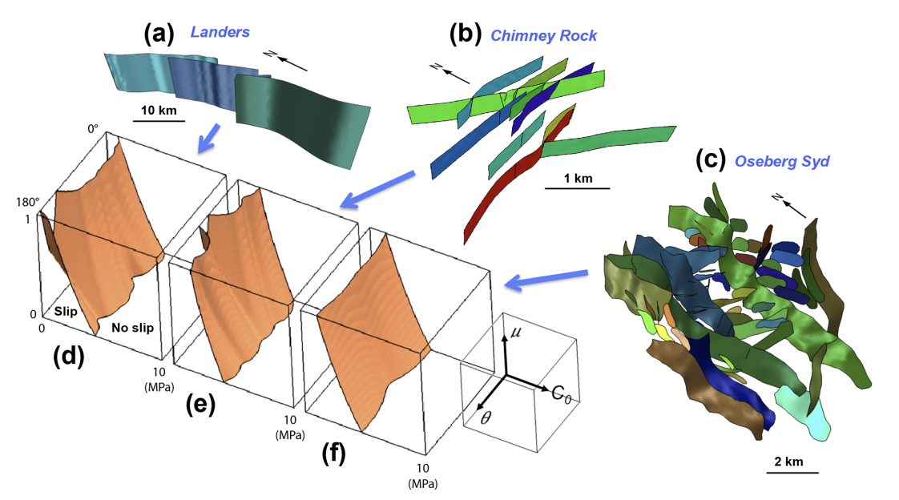

Search
Preparing search index...
The search index is not available
Mechanics - v0.0.1-wip
Options
All
Public
Public/Protected
All
Inherited
Externals
Menu
Mechanics - v0.0.1-wip
@youwol/mechanics
Description
Continuum mechanics algorithms

Documentation
See the
online documentation
.
Exports
Example_
WC
Axis
Envelope2D
Envelope3D
Fault
System
Fault
System
Envelope2D
Fault
System
Envelope3D
Sampler1D
Sampler2D
Sampler3D
Wc
Wc
Envelope2D
Wc
Envelope3D
Gen
Algorithm
Generator
Type
Remote
Function
Stress
Surface
Type
Vector